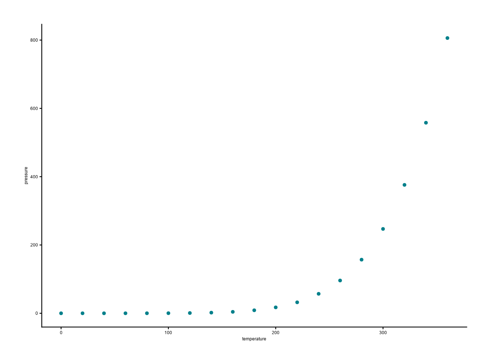

Analytics for the Australian Grains Industry – Curtin University (AAGI-CU) Technical Report Series: 123
Descriptive title for report Report for AAA–BBB

Analytics for the Australian Grains Industry
University Name (AAGI-XX)
AAGI Program Report
1 Informative title for short report
1.1 Report for GRDC/AAGI Project Code
Prepared for: Client Name (Client Organisation)
Prepared by: Your Name, Name 2
Correspondence email: your.email@example.edu.au
Last updated: 2026-04-07

2 Executive Summary
This document demonstrates the AAGI HTML report format provided by the AAGIQuarto extension. It renders a fully styled, self-contained HTML report using AAGI branding — AAGI teal headings, teal table headers with alternating row shading, teal hyperlinks, and an AAGI-styled note callout.
Use this format for sharing AAGI technical reports as web-ready HTML documents.
3 Introduction
The aagi-html+report format applies AAGI branding to Quarto HTML output:
- Teal headings and hyperlinks matching the AAGI colour palette.
- Table styling with a teal header row, white text, and alternating row backgrounds.
- A note callout styled to match the LaTeX
tcolorboxnote environment. - Table of contents and numbered sections for longer reports.
- A title block styled with AAGI colours.
To use this format in your own document:
format:
aagi-html+report: defaultThen render with:
quarto render your-report.qmd --to aagi-html+report4 Experimental/Trial Design
- Trial design type and layout.
- Treatments, number of replicates.
- Specific considerations for small plots, glasshouse, genetics, breeding trials, OFE projects, or bioinformatics.
5 Exploratory Data Analysis and Data Visualisation
- Interpretation of plots and data.
- Rationale behind specific methods used.
6 Methods
Detailed description of the procedures and methodologies used.
7 Results and Discussion
Findings and their implications.
7.1 Note callout example
Use Quarto’s built-in callout note for important information:
Note
This is an AAGI-styled note callout, analogous to the note environment in the LaTeX PDF report template. Use it to highlight important information for the reader.
Alternatively, use the .aagi-note class for the tcolorbox-style appearance:
This is an .aagi-note div. It mimics the left- and right-bordered teal box from the LaTeX template.
7.2 Table example
AAGI table styling is applied automatically to all Markdown tables. The header row uses AAGI teal with white text, and rows alternate between AAGI grey and white.
| Treatment | Replicate | Yield (t/ha) | Protein (%) |
|---|---|---|---|
| Control | 1 | 3.21 | 11.4 |
| Control | 2 | 3.08 | 11.8 |
| Nitrogen | 1 | 4.15 | 12.9 |
| Nitrogen | 2 | 4.32 | 13.1 |
7.3 Figure example
8 Metadata and Datasets (Optional)
- md5sums for input data and outputs (if applicable).
- Git commit numbers and tags.
- Location of outputs (FAIR Data).
- DOI for AAGI outputs.
9 References
10 Appendix (Optional)
Additional supporting information.